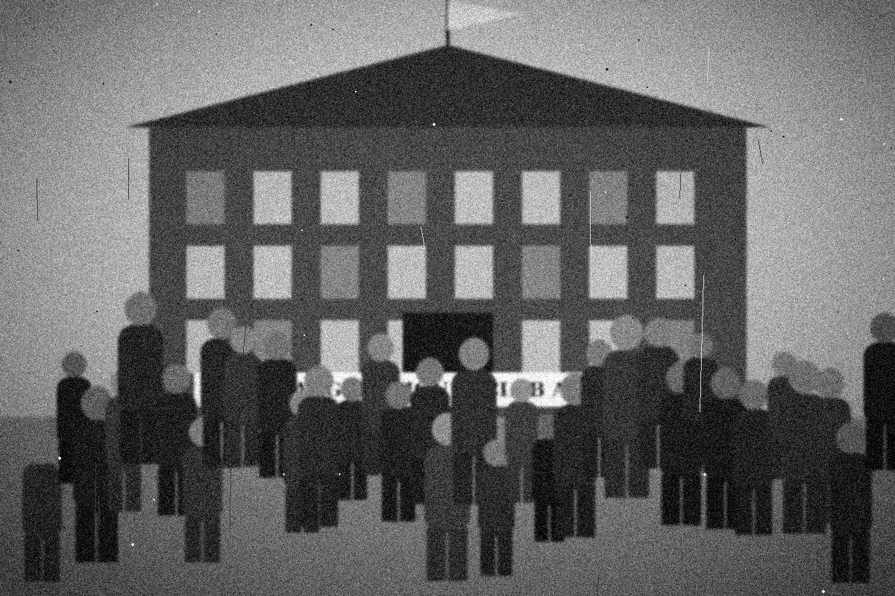
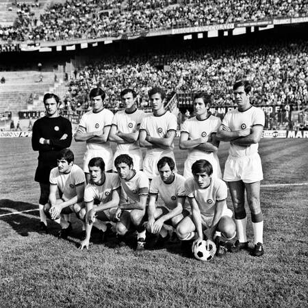
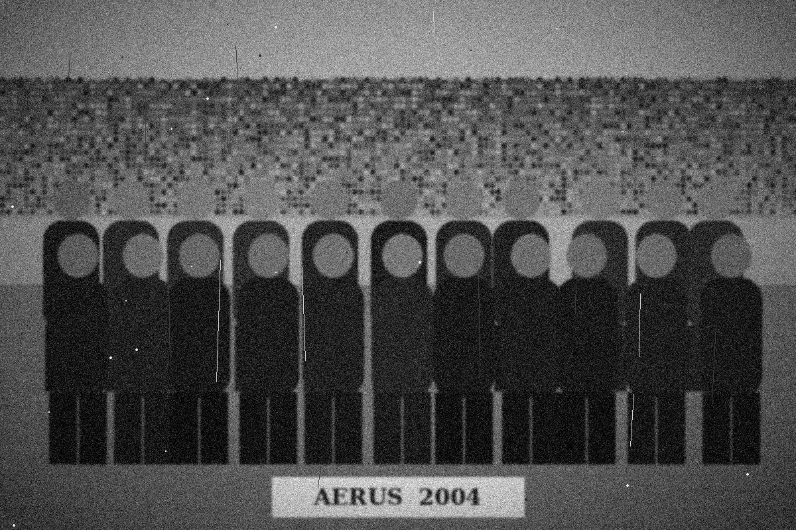

Fútbol — Liga interna
Aerus Palomar 3 — 2 Deportivo Oeste
Tabla simulada: 1.º Aerus (12 pts) · 2.º Oeste (9 pts) · 3.º Unión (6 pts)

Eventos, encuentros y clases de prueba
Las reservas requieren iniciar sesión. Los cupos se actualizan desde la base de datos.
Datos simulados para demostración; no son resultados oficiales.
Aerus Palomar 3 — 2 Deportivo Oeste
Tabla simulada: 1.º Aerus (12 pts) · 2.º Oeste (9 pts) · 3.º Unión (6 pts)
Aerus Mixto 2 — 1 Club Central
Tabla simulada: 1.º Aerus (8 pts) · 2.º Central (6 pts) · 3.º Estrella (4 pts)



